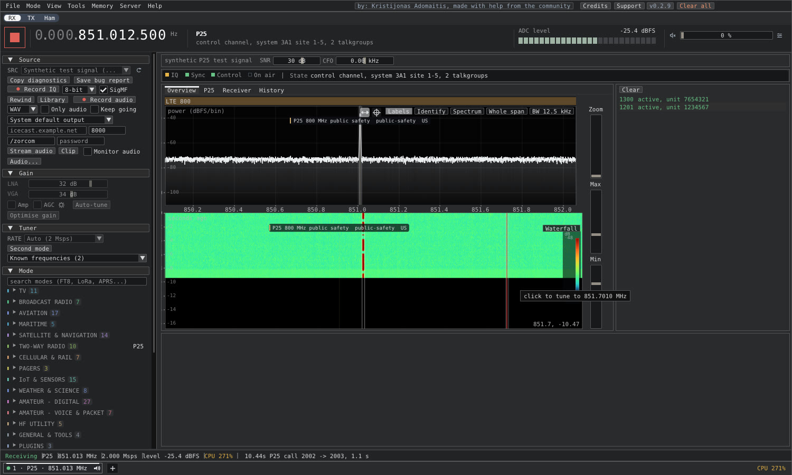
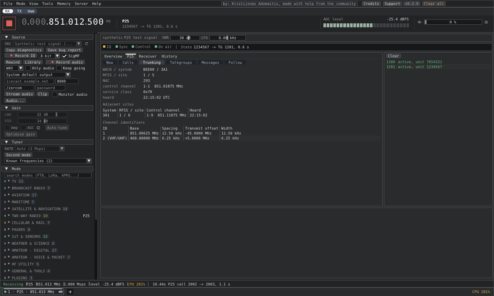
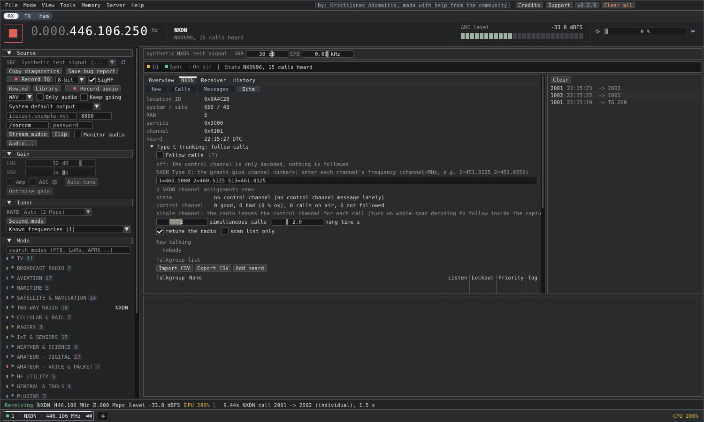

Trunked radio
Follow calls on P25, DMR Tier III and NXDN, and scan whole systems
Eye of SaurCom how-to

EYE OF SAURCOM
STEP 1
Tune to the system's control channel in the P25, DMR or NXDN mode

EYE OF SAURCOM
STEP 2
The Trunking view lists the site, neighbours and channel plan

EYE OF SAURCOM
STEP 3
Follow tab: tick Follow calls, then import your talkgroup list

EYE OF SAURCOM
DMR / NXDN
DMR and NXDN grants carry channel numbers: enter number = MHz pairs

EYE OF SAURCOM
STEP 4
Tools > Scanner: tick Trunked on a control channel entry
Good to know
Encrypted calls are logged, never followed. Voice needs your own mbelib.
Recordings are saved per call